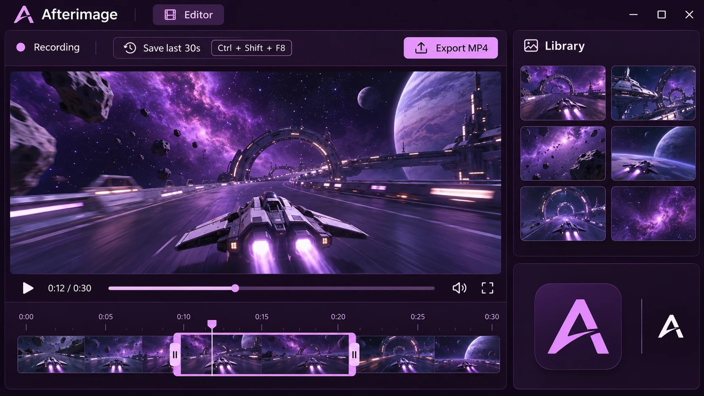

Record in the background
Afterimage records from the Windows tray. Open its tray menu to pause recording or view your library.
Afterimage keeps recent gameplay ready in your Windows tray. Press a shortcut to save the moment, then trim and export your clip.
Download for Windows
Afterimage records from the Windows tray. Open its tray menu to pause recording or view your library.
Press Ctrl + Shift + F8 to save the last 30 seconds. Pick a different replay length in settings.
Open a saved clip, choose its start and end, and export an MP4. The original stays in your library.